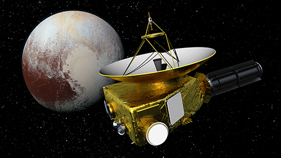
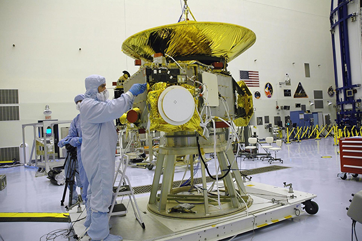
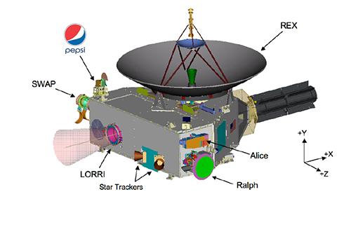

«Новые горизонты» — первая американская автоматическая межпланетная станция (АМС), запущенная в рамках программы НАСА «Новые рубежи» (New Frontiers). Основной миссией являлось изучение Плутона и его естественного спутника Харона.
Работа над миссией New Horizons («Новые Горизонты») по-настоящему началась в 2000 году под руководством Алана Штерна, директора Отдела космических исследований в Юго-Западном исследовательском институте (Southwest Research Institute, SwRI). Предшественниками New Horizons были проекты Pluto 350 и Pluto Kuiper Express, запуск последнего даже был первоначально намечен на 2000 год с достижением планеты в 2012–2013 годах. Но проекту не повезло — в том самом 2000 году бюджет урезали, поскольку стоимость полета оценивалась в миллиард долларов, и в итоге миссию просто отменили. Новый проект был осуществлен в весьма сжатые сроки — от создания научно-инженерной команды до готового аппарата прошло всего пять лет: к зиме 2005−2006 годов собранный и укрытый термоизоляцией зонд уже находился на мысе Канаверал, готовый к запуску.  При взгляде на этот космический аппарат сразу становится очевидной одна важная деталь: по силуэту он не похож на современные спутники — у него отсутствуют солнечные батареи. Это неудивительно, поскольку солнечного света у Плутона очень мало. Самая далекая планета, куда посылали космический аппарат с питанием от солнечных батарей, — это Юпитер. Треугольная платформа с остронаправленной антенной на одной из плоскостей завершается странным выступающим из одного из углов цилиндром. Это — РИТЭГ, радиоизотопный термоэлектрический генератор. В нем электричество вырабатывается напрямую преобразованием тепла распада радиоактивного изотопа. Такой же источник питания используется в знаменитом аппарате Cassini, более десяти лет работающем в системе Сатурна, и в марсоходе Curiosity.Внутри РИТЭГа находятся 11 кг плутония-238. Это очень удобный для таких целей изотоп: при его распаде выделяется много тепла, причем этот плутоний испускает только тяжелые альфа-частицы, от которых достаточно легко защититься. Главный недостаток данного изотопа состоит в его дефицитности: он был побочным продуктом при производстве оружейного плутония, а в настоящее время этот процесс остановлен и в США, и в России. Поэтому на New Horizons плутония (и запаса энергии) втрое меньше, чем, скажем, на Cassini.
АМС «Новые Горизонты» представляет собой рассчитанную на продолжительный период работы автоматическую межпланетную станцию с автономным источником энергоснабжения в виде радиоизотопного термоэлектрического генератора (РИТЭГ). Конструкция станции является развитием конструкции АМС «Улисс». Корпус аппарата имеет форму несимметричной шестиугольной призмы размерами 0,69×2,11×2,74 м из сотовых алюминиевых панелей, опирающейся на внутренний несущий алюминиевый цилиндр (выполняющий также функции адаптера для соединения с ракетой-носителем), внутри которого расположены баки с топливом. С внешней стороны призмы размещены научные приборы и ряд служебных систем, наиболее крупными из которых являются остронаправленная антенна диаметром 2,1 м и РИТЭГ. Стартовая масса аппарата составляла 478 кг, включая 77 кг топлива
Запуск осуществлён 19 января 2006 года, аппарат выполнил пролёт Юпитера (с гравитационным манёвром в его поле тяготения) в 2007 году и научную программу изучения Плутона в 2015 году. В начале 2019 года производилось изучение объектов пояса Койпера, а в апреле 2020 «Новые горизонты» использовали для уточнения расстояния до звёзд Вольф 359 и Проксима Центавра. Полная программа исследований «Новых горизонтов» рассчитана на 15—17 лет. «Новые горизонты» покинул окрестности Земли с самой большой из всех космических аппаратов скоростью. В момент выключения двигателей она составила по разным источникам от 16,21 до 16,26 км/с относительно Земли. Гелиоцентрическая скорость составила около 45 км/с и была достаточной для выхода за пределы Солнечной системы даже без дополнительного разгона, который «Новые горизонты» получили за счёт гравитационного манёвра около Юпитера в 2007 году. Тем не менее, в настоящее время гелиоцентрическая скорость «Новых горизонтов» уступает скоростям обоих «Вояджеров», план полёта которых включал второй разгонный гравитационный манёвр в окрестностях Сатурна.